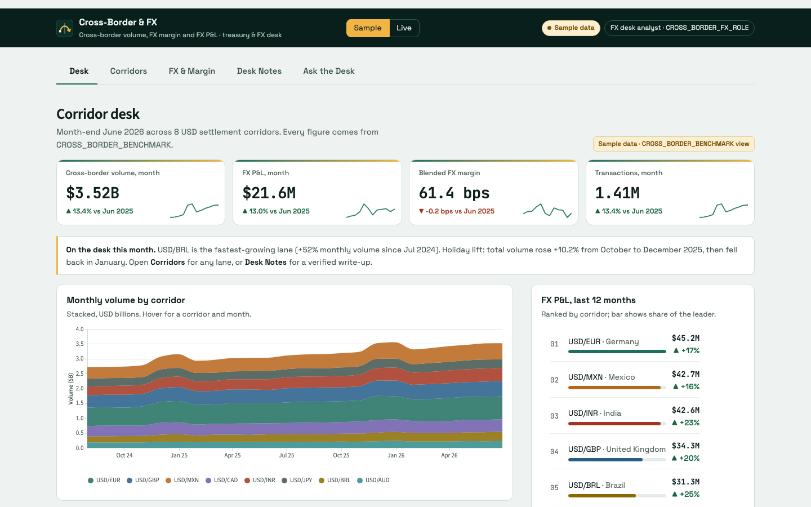
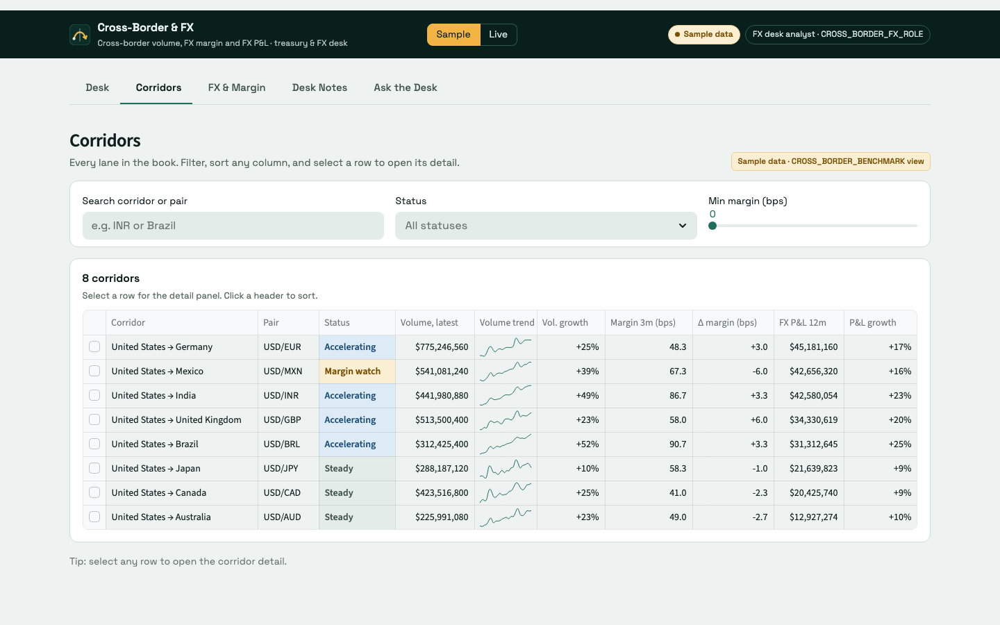
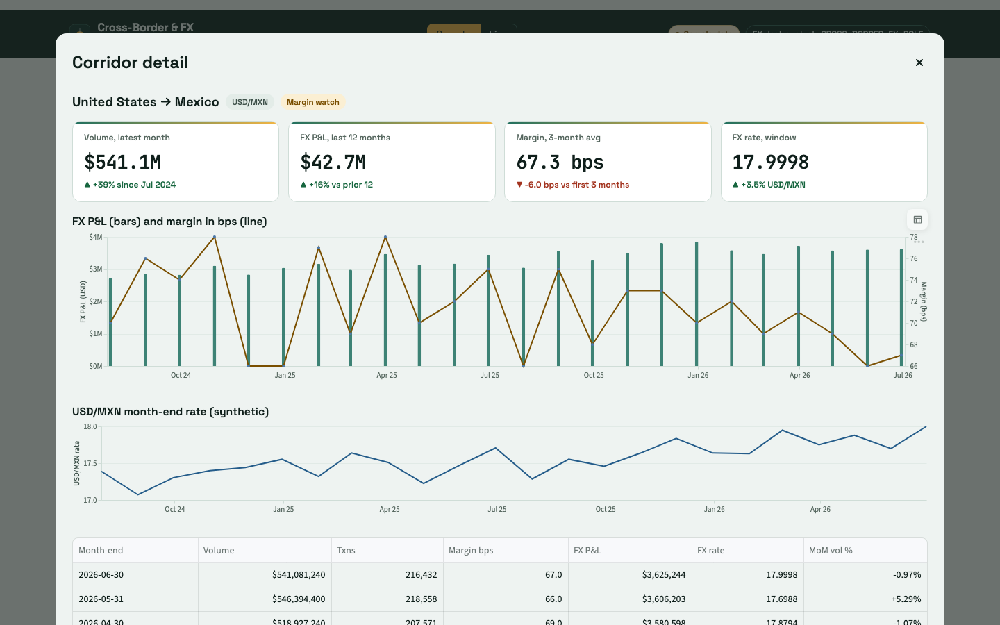
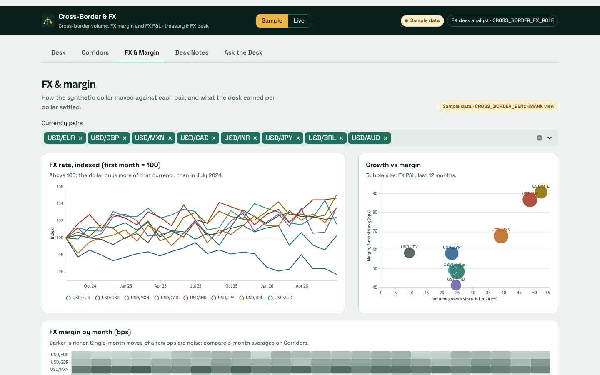
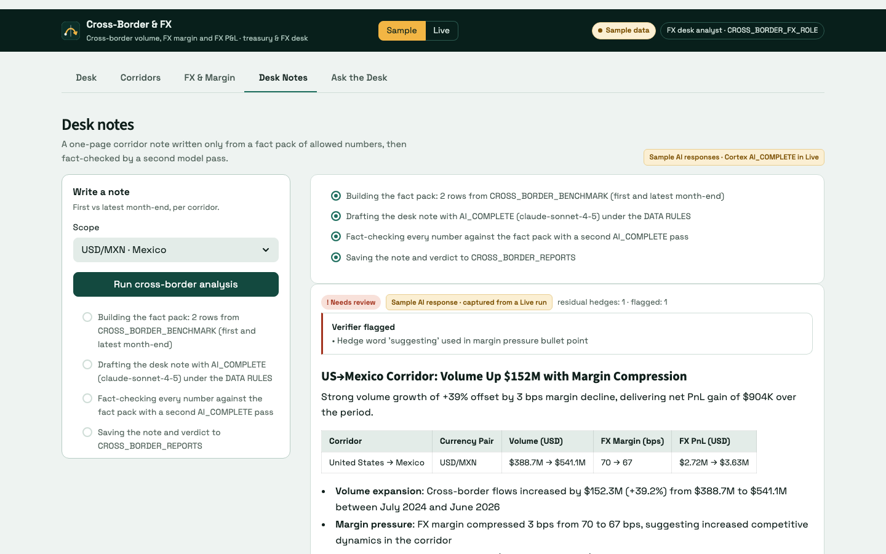
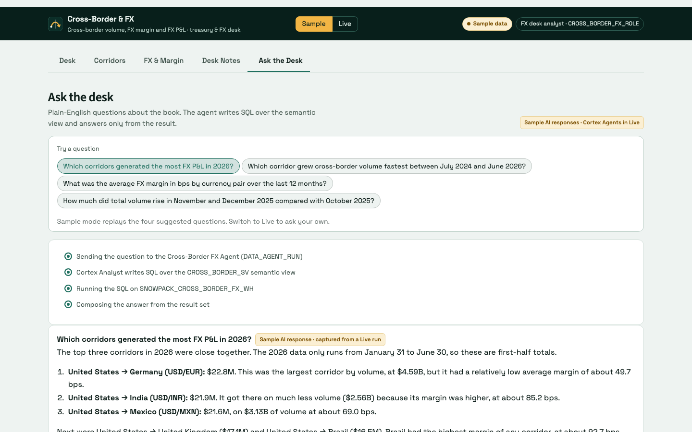

The scenario
A fictional payments processor's FX desk settles cross-border payments for merchants across eight USD corridors, from Germany and the United Kingdom to Brazil and India. The head of FX wants to know, each month-end, which lanes grow, which earn the most per dollar, and where margin is slipping, in a note the CFO can trust. On this synthetic data set, the app surfaces the stories planted in the book: emerging-market lanes growing fastest, USD/EUR earning the most in total at under 50 bps, a November–December volume lift, and a margin squeeze on USD/MXN.
What you get

CROSS_BORDER_BENCHMARK view on a dedicated XSMALL warehouse.

CROSS_BORDER_BENCHMARK.

AI_COMPLETE drafts a note from a fact pack of allowed numbers; a second AI_COMPLETE pass checks it and badges it Verified or Needs review. Notes are saved to a table.
CROSS_BORDER_SV semantic view, called with DATA_AGENT_RUN; the SQL it wrote is one click away.Screens are from the app's Sample mode. Its AI answers were captured from Live runs and are labeled "Sample AI response".
How Snowflake does each step
- Govern the numbers. Setup loads the synthetic book into tables owned by a least-privilege role and joins them in one corridor × month view,
CROSS_BORDER_BENCHMARK. - Model the business terms. A semantic view,
CROSS_BORDER_SV, names the facts, dimensions and metrics (volume, bps, FX P&L). - Answer questions. A Cortex Agent uses Cortex Analyst over the semantic view; the app calls it with DATA_AGENT_RUN.
- Write and check the note. AI_COMPLETE drafts from a fact pack, a second pass verifies it, and the verdict is stored in
CROSS_BORDER_REPORTS. - Run the app. Streamlit in Snowflake, or locally on your laptop with key-pair auth.
Run it
No account
Open the hosted example, or clone the repository and run streamlit run app/streamlit_app.py for Sample mode.
On Snowflake
Run sql/setup.sql in a worksheet, then deploy the app in Snowflake or set key-pair variables and switch to Live. sql/cleanup.sql removes everything.
Prerequisites
Enterprise Edition in a region with Cortex AI functions and Cortex Agents, and a role that can create a role, warehouse and database. About 15 seconds of setup; AI notes cost a fraction of a credit each.
Synthetic data, illustrative logic. All corridors, volumes, margins and FX rates are generated; the processor is fictional. This is an example, not a production application, and not financial, accounting or regulatory advice. It is not an official Snowflake product and is not supported by Snowflake Support. Review and test before any use with real data.